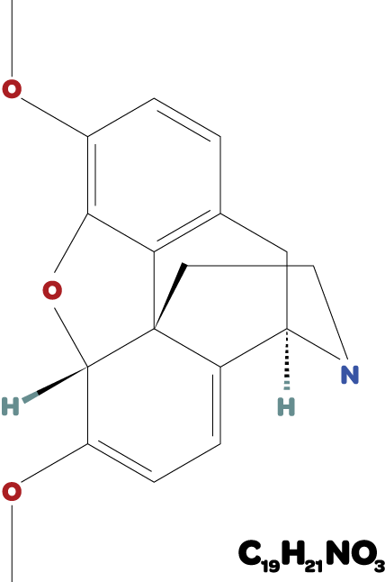

@charset "UTF-8";
/*
_|_|_ _ |_ _ o __ _ ¦ _ _ thebaine grid system. v0.1.0
|_| |(/_|_)(_| | | |(/_ ¦ (_| _\ build: 1027 [2015-08-10 @ 6:02:13 pm gmt-4]
¦ _| copyright (c) 2015 matthew f. fox/opiate nu media ¦ http://opiate.nu
*/
.tb-container,.tb-container-fluid{-webkit-box-sizing:border-box;-moz-box-sizing:border-box;box-sizing:border-box;margin:auto;padding:0 15px;width:100%}.tb-strut{-webkit-box-sizing:border-box;-moz-box-sizing:border-box;box-sizing:border-box;clear:both;display:block;margin-left:-15px;margin-right:-15px}.tb-strut div[class*=tb-c-]{-webkit-box-sizing:border-box;-moz-box-sizing:border-box;box-sizing:border-box;min-height:1px;overflow:hidden;padding:0 15px;position:relative}div[class*=tb-c-] .tb-strut{padding:0}.tb-strut:after{clear:both}@media screen and (min-width:568px){.tb-container{width:538px}.tb-strut div[class*=tb-c-]{float:left}.tb-c-sm-1-12{width:8.33333%}.tb-c-sm-2-12{width:16.66667%}.tb-c-sm-3-12{width:25%}.tb-c-sm-4-12{width:33.33333%}.tb-c-sm-5-12{width:41.66667%}.tb-c-sm-6-12{width:50%}.tb-c-sm-7-12{width:58.33333%}.tb-c-sm-8-12{width:66.66667%}.tb-c-sm-9-12{width:75%}.tb-c-sm-10-12{width:83.33333%}.tb-c-sm-11-12{width:91.66667%}.tb-c-sm-12-12{width:100%}.tb-c-sm-push-1-12{left:8.33333%}.tb-c-sm-pull-1-12{left:-8.33333%}.tb-c-sm-off-1-12{margin-right:8.33333%}.tb-c-sm-push-2-12{left:16.66667%}.tb-c-sm-pull-2-12{left:-16.66667%}.tb-c-sm-off-2-12{margin-right:16.66667%}.tb-c-sm-push-3-12{left:25%}.tb-c-sm-pull-3-12{left:-25%}.tb-c-sm-off-3-12{margin-right:25%}.tb-c-sm-push-4-12{left:33.33333%}.tb-c-sm-pull-4-12{left:-33.33333%}.tb-c-sm-off-4-12{margin-right:33.33333%}.tb-c-sm-push-5-12{left:41.66667%}.tb-c-sm-pull-5-12{left:-41.66667%}.tb-c-sm-off-5-12{margin-right:41.66667%}.tb-c-sm-push-6-12{left:50%}.tb-c-sm-pull-6-12{left:-50%}.tb-c-sm-off-6-12{margin-right:50%}.tb-c-sm-push-7-12{left:58.33333%}.tb-c-sm-pull-7-12{left:-58.33333%}.tb-c-sm-off-7-12{margin-right:58.33333%}.tb-c-sm-push-8-12{left:66.66667%}.tb-c-sm-pull-8-12{left:-66.66667%}.tb-c-sm-off-8-12{margin-right:66.66667%}.tb-c-sm-push-9-12{left:75%}.tb-c-sm-pull-9-12{left:-75%}.tb-c-sm-off-9-12{margin-right:75%}.tb-c-sm-push-10-12{left:83.33333%}.tb-c-sm-pull-10-12{left:-83.33333%}.tb-c-sm-off-10-12{margin-right:83.33333%}.tb-c-sm-push-11-12{left:91.66667%}.tb-c-sm-pull-11-12{left:-91.66667%}.tb-c-sm-off-11-12{margin-right:91.66667%}}@media screen and (min-width:768px){.tb-container{width:738px}.tb-strut div[class*=tb-c-]{float:left}.tb-c-md-1-12{width:8.33333%}.tb-c-md-2-12{width:16.66667%}.tb-c-md-3-12{width:25%}.tb-c-md-4-12{width:33.33333%}.tb-c-md-5-12{width:41.66667%}.tb-c-md-6-12{width:50%}.tb-c-md-7-12{width:58.33333%}.tb-c-md-8-12{width:66.66667%}.tb-c-md-9-12{width:75%}.tb-c-md-10-12{width:83.33333%}.tb-c-md-11-12{width:91.66667%}.tb-c-md-12-12{width:100%}.tb-c-md-push-1-12{left:8.33333%}.tb-c-md-pull-1-12{left:-8.33333%}.tb-c-md-off-1-12{margin-right:8.33333%}.tb-c-md-push-2-12{left:16.66667%}.tb-c-md-pull-2-12{left:-16.66667%}.tb-c-md-off-2-12{margin-right:16.66667%}.tb-c-md-push-3-12{left:25%}.tb-c-md-pull-3-12{left:-25%}.tb-c-md-off-3-12{margin-right:25%}.tb-c-md-push-4-12{left:33.33333%}.tb-c-md-pull-4-12{left:-33.33333%}.tb-c-md-off-4-12{margin-right:33.33333%}.tb-c-md-push-5-12{left:41.66667%}.tb-c-md-pull-5-12{left:-41.66667%}.tb-c-md-off-5-12{margin-right:41.66667%}.tb-c-md-push-6-12{left:50%}.tb-c-md-pull-6-12{left:-50%}.tb-c-md-off-6-12{margin-right:50%}.tb-c-md-push-7-12{left:58.33333%}.tb-c-md-pull-7-12{left:-58.33333%}.tb-c-md-off-7-12{margin-right:58.33333%}.tb-c-md-push-8-12{left:66.66667%}.tb-c-md-pull-8-12{left:-66.66667%}.tb-c-md-off-8-12{margin-right:66.66667%}.tb-c-md-push-9-12{left:75%}.tb-c-md-pull-9-12{left:-75%}.tb-c-md-off-9-12{margin-right:75%}.tb-c-md-push-10-12{left:83.33333%}.tb-c-md-pull-10-12{left:-83.33333%}.tb-c-md-off-10-12{margin-right:83.33333%}.tb-c-md-push-11-12{left:91.66667%}.tb-c-md-pull-11-12{left:-91.66667%}.tb-c-md-off-11-12{margin-right:91.66667%}}@media screen and (min-width:1024px){.tb-container{width:994px}.tb-strut div[class*=tb-c-]{float:left}.tb-c-lg-1-12{width:8.33333%}.tb-c-lg-2-12{width:16.66667%}.tb-c-lg-3-12{width:25%}.tb-c-lg-4-12{width:33.33333%}.tb-c-lg-5-12{width:41.66667%}.tb-c-lg-6-12{width:50%}.tb-c-lg-7-12{width:58.33333%}.tb-c-lg-8-12{width:66.66667%}.tb-c-lg-9-12{width:75%}.tb-c-lg-10-12{width:83.33333%}.tb-c-lg-11-12{width:91.66667%}.tb-c-lg-12-12{width:100%}.tb-c-lg-push-1-12{left:8.33333%}.tb-c-lg-pull-1-12{left:-8.33333%}.tb-c-lg-off-1-12{margin-right:8.33333%}.tb-c-lg-push-2-12{left:16.66667%}.tb-c-lg-pull-2-12{left:-16.66667%}.tb-c-lg-off-2-12{margin-right:16.66667%}.tb-c-lg-push-3-12{left:25%}.tb-c-lg-pull-3-12{left:-25%}.tb-c-lg-off-3-12{margin-right:25%}.tb-c-lg-push-4-12{left:33.33333%}.tb-c-lg-pull-4-12{left:-33.33333%}.tb-c-lg-off-4-12{margin-right:33.33333%}.tb-c-lg-push-5-12{left:41.66667%}.tb-c-lg-pull-5-12{left:-41.66667%}.tb-c-lg-off-5-12{margin-right:41.66667%}.tb-c-lg-push-6-12{left:50%}.tb-c-lg-pull-6-12{left:-50%}.tb-c-lg-off-6-12{margin-right:50%}.tb-c-lg-push-7-12{left:58.33333%}.tb-c-lg-pull-7-12{left:-58.33333%}.tb-c-lg-off-7-12{margin-right:58.33333%}.tb-c-lg-push-8-12{left:66.66667%}.tb-c-lg-pull-8-12{left:-66.66667%}.tb-c-lg-off-8-12{margin-right:66.66667%}.tb-c-lg-push-9-12{left:75%}.tb-c-lg-pull-9-12{left:-75%}.tb-c-lg-off-9-12{margin-right:75%}.tb-c-lg-push-10-12{left:83.33333%}.tb-c-lg-pull-10-12{left:-83.33333%}.tb-c-lg-off-10-12{margin-right:83.33333%}.tb-c-lg-push-11-12{left:91.66667%}.tb-c-lg-pull-11-12{left:-91.66667%}.tb-c-lg-off-11-12{margin-right:91.66667%}}@media screen and (min-width:1280px){.tb-container{width:1250px}.tb-strut div[class*=tb-c-]{float:left}.tb-c-xl-1-12{width:8.33333%}.tb-c-xl-2-12{width:16.66667%}.tb-c-xl-3-12{width:25%}.tb-c-xl-4-12{width:33.33333%}.tb-c-xl-5-12{width:41.66667%}.tb-c-xl-6-12{width:50%}.tb-c-xl-7-12{width:58.33333%}.tb-c-xl-8-12{width:66.66667%}.tb-c-xl-9-12{width:75%}.tb-c-xl-10-12{width:83.33333%}.tb-c-xl-11-12{width:91.66667%}.tb-c-xl-12-12{width:100%}.tb-c-xl-push-1-12{left:8.33333%}.tb-c-xl-pull-1-12{left:-8.33333%}.tb-c-xl-off-1-12{margin-right:8.33333%}.tb-c-xl-push-2-12{left:16.66667%}.tb-c-xl-pull-2-12{left:-16.66667%}.tb-c-xl-off-2-12{margin-right:16.66667%}.tb-c-xl-push-3-12{left:25%}.tb-c-xl-pull-3-12{left:-25%}.tb-c-xl-off-3-12{margin-right:25%}.tb-c-xl-push-4-12{left:33.33333%}.tb-c-xl-pull-4-12{left:-33.33333%}.tb-c-xl-off-4-12{margin-right:33.33333%}.tb-c-xl-push-5-12{left:41.66667%}.tb-c-xl-pull-5-12{left:-41.66667%}.tb-c-xl-off-5-12{margin-right:41.66667%}.tb-c-xl-push-6-12{left:50%}.tb-c-xl-pull-6-12{left:-50%}.tb-c-xl-off-6-12{margin-right:50%}.tb-c-xl-push-7-12{left:58.33333%}.tb-c-xl-pull-7-12{left:-58.33333%}.tb-c-xl-off-7-12{margin-right:58.33333%}.tb-c-xl-push-8-12{left:66.66667%}.tb-c-xl-pull-8-12{left:-66.66667%}.tb-c-xl-off-8-12{margin-right:66.66667%}.tb-c-xl-push-9-12{left:75%}.tb-c-xl-pull-9-12{left:-75%}.tb-c-xl-off-9-12{margin-right:75%}.tb-c-xl-push-10-12{left:83.33333%}.tb-c-xl-pull-10-12{left:-83.33333%}.tb-c-xl-off-10-12{margin-right:83.33333%}.tb-c-xl-push-11-12{left:91.66667%}.tb-c-xl-pull-11-12{left:-91.66667%}.tb-c-xl-off-11-12{margin-right:91.66667%}}.clear:after,.clear:before,.tb-strut:after,.tb-strut:before{display:table;content:" ";-webkit-box-sizing:border-box;-moz-box-sizing:border-box;box-sizing:border-box}.clear:after{clear:both}.tb-v-lg-block,.tb-v-lg-inline,.tb-v-md-block,.tb-v-md-inline,.tb-v-sm-block,.tb-v-sm-inline,.tb-v-xl-block,.tb-v-xl-inline{display:none}.tb-iv-lg,.tb-iv-md,.tb-iv-sm,.tb-iv-xl{display:inherit}@media screen and (max-width:567px){.tb-v-sm-block{display:block}.tb-v-sm-inline{display:inline}.tb-iv-sm{display:none!important}}@media screen and (max-width:767px){.tb-v-md-block{display:block}.tb-v-md-inline{display:inline}.tb-iv-md{display:none!important}}@media screen and (max-width:1023px){.tb-v-lg-block{display:block}.tb-v-lg-inline{display:inline}.tb-iv-lg{display:none!important}}@media screen and (max-width:1279px){.tb-v-xl-block{display:block}.tb-v-xl-inline{display:inline}.tb-iv-xl{display:none!important}}img.tb-responsive{display:block;height:auto;margin:auto;max-width:100%}.tb-ratio-1-1{margin-top:100%}.tb-ratio-3-4{margin-top:75%}.tb-ratio-9-16{margin-top:65.25%}.tb-strut div[class*=tb-c-].tb-ratio{padding:0;position:relative}.tb-ratio-container{position:absolute;top:0;left:0}
thebaine
Give your front-end development toolkit a bump with Thebaine.
Thebaine (paramorphine), also known as codeine methyl enol ether, is an opiate alkaloid, its name coming from the Greek Θῆβαι, Thēbai (Thebes), an ancient city in Upper Egypt. A minor constituent of opium, thebaine is chemically similar to both morphine and codeine, but has stimulatory rather than depressant effects.
Thebaine, unlike its namesake, is a lightweight, mobile-first grid system written in Sass.
While ready to use out-of-the-box, Thebaine is fully customizable; define your own breakpoint sizes and column amounts with ease. Combine the flexibility of Thebaine with either Normalize.css or the YUI3 reset (both are optional and built-in) and build on top of a solid foundation without the bulk of fully-featured frameworks. We've even included a Gruntfile that takes care of building Thebaine once you've configured it to meet your needs.
Thebaine is released under the MIT license.

Is Thebaine a good fit for your front-end development needs? We hope so. If not, drop us a line and let us know what you think would make it better.
